Unit 2 Module 2a
GEOG246-346
2026-08-30 Back to home
Source:vignettes/unit2-module2a.Rmd
unit2-module2a.RmdWorking with raster data
We are now going to start working with the terra
package. terra is newer and faster version of the older
raster package, per the help (?terra):
The terra package is conceived as a replacement of the raster package. terra has a very similar, but simpler, interface, and it is faster than raster. At the bottom of this page there is a table that shows differences in the methods between the two packages.
terra is somewhat conversant with the tidyverse and
sf, but it has its own vector class (vec) that
we will have to use for some operations. The upshot of this is that
operations involving raster-vector interactions will sometimes require
coercion of sf to vec objects. That is not a
major obstacle, however.
The material in this section assumes that the reader is familiar with standard raster GIS operations and concepts, ranging from projections and transformations to moving windows, raster algebra, terrain analysis, and the like.
We’ll use the following datasets in this section:
library(geospaar)
farmers <- system.file("extdata/farmer_spatial.csv", package = "geospaar") %>%
read_csv(show_col_types = FALSE)
roads <- system.file("extdata/roads.geojson", package = "geospaar") %>% st_read
#> Reading layer `roads' from data source
#> `/opt/R/4.6.1/lib/R/site-library/geospaar/extdata/roads.geojson' using driver `GeoJSON'
#> Simple feature collection with 473 features and 1 field
#> Geometry type: MULTILINESTRING
#> Dimension: XY
#> Bounding box: xmin: -292996.9 ymin: -2108848 xmax: 873238.8 ymax: -1008785
#> Projected CRS: Africa_Albers_Equal_Area_Conic
districts <- system.file("extdata/districts.geojson", package = "geospaar") %>%
st_read
#> Reading layer `districts' from data source
#> `/opt/R/4.6.1/lib/R/site-library/geospaar/extdata/districts.geojson' using driver `GeoJSON'
#> Simple feature collection with 72 features and 1 field
#> Geometry type: POLYGON
#> Dimension: XY
#> Bounding box: xmin: 21.99978 ymin: -18.0751 xmax: 33.6875 ymax: -8.226213
#> Geodetic CRS: WGS 84raster basics
SpatRaster* classes
We’ll start off by learning about the basic classes associated with
rasters generated by the terra package, which we will do by
building our own objects from scratch, starting with a
SpatRaster
RasterLayer
# Chunk 1
# #1
e <- ext(c("xmin" = 27, "xmax" = 29, "ymin" = -16, "ymax" = -14))
#
# #2
r <- rast(x = e, res = 0.25, crs = crs(districts))
#
# #3
set.seed(1)
values(r) <- sample(1:100, size = ncell(r), replace = TRUE) # 3
# r[] <- sample(1:100, size = ncell(r), replace = TRUE)
# r <- setValues(x = r, values = sample(1:100, size = ncell(r), replace = TRUE))
par(mar = c(0, 0, 0, 4))
plot(st_geometry(districts), col = "grey", reset = FALSE)
plot(r, add = TRUE)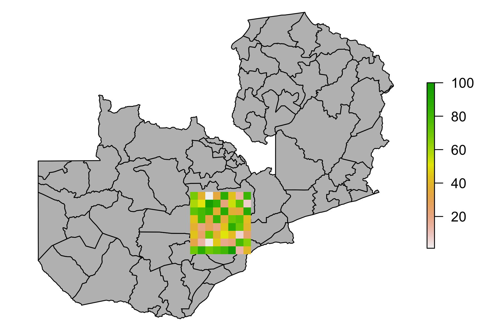
We just used several functions from the terra package to
create a random SpatRaster named r that has a
1/4 degree resolution and covers an area of 2 X 2 degrees in southern
Zambia. This particular raster is a temporary one that lives in
memory.
Let’s walk through the labelled code. In # 1, we use
terra’s ext (extent) function to define the
boundaries of the raster, and then in # 2 use the rast
function to create a raster from the resulting SpatExtent
object e, assigning a CRS using the “crs” argument, which
in turn uses terra’s crs to extract the crs
from districts (#3). crs is similar to
sf::st_crs, but outputs a different class of object that
can’t be used by terra. The terra function can
create a raster from many different types of input objects (passed to
argument “x”), per ?rast:
filename (character), missing, SpatRaster, SpatRasterDataset, SpatExtent, SpatVector, matrix, array, list of SpatRaster objects. For other types it will be attempted to create a SpatRaster via (‘as(x, “SpatRaster”)’
Line # 2 creates an empty raster r with no cell values,
so in # 3 we assign some randomly selected values into r.
Note the method of assignment, using the values function;
there are two other lines commented out below # 3 that show different
ways of doing the same job.
The plot of r over districts uses the
plot method defined for raster* objects. Note
that it automatically creates a continuous legend, and also note that
terra::plot can work with sf::plot.
Let’s look now at the structure of the object r.
# Chunk 2
r
#> class : SpatRaster
#> dimensions : 8, 8, 1 (nrow, ncol, nlyr)
#> resolution : 0.25, 0.25 (x, y)
#> extent : 27, 29, -16, -14 (xmin, xmax, ymin, ymax)
#> coord. ref. : lon/lat WGS 84 (EPSG:4326)
#> source : memory
#> name : lyr.1
#> min value : 1
#> max value : 100
class(r)
#> [1] "SpatRaster"
#> attr(,"package")
#> [1] "terra"
typeof(r)
#> [1] "S4"
slotNames(r)
#> [1] "ptr"
r@ptr
#> C++ object <0x7fdf5f8bfa50> of class 'SpatRaster' <0x7fdfbadc20c0>
names(r@ptr)
#> [1] "timestep" ".pointer" "hasValues"
#> [4] "res" ".cppclass" "messages"
#> [7] "nsrc" "extent" "dataType"
#> [10] "time" "valueType" "nrow"
#> [13] "depth" "range_max" "nlyr"
#> [16] "rgb" "hasColors" "names"
#> [19] "get_sourcenames" "filenames" "subset"
#> [22] "hasRange" "hasTime" "rgbtype"
#> [25] ".self" "hasWindow" "has_warning"
#> [28] "range_min" "origin" "readStop"
#> [31] "has_error" "readValues" "getClass"
#> [34] "units" "get_crs" "setValues"
#> [37] "hasCategories" "readStart" "hasUnit"
#> [40] "setValueType" ".module" "addSource"
#> [43] "timezone" "initialize" ".refClassDef"
#> [46] "inMemory" "ncol"
res(r)
#> [1] 0.25 0.25r is an S4 object that has only slot ptr,
which is actually from C++ (terra is written in C++ and
creates a C++ object). There are a number of slots in there, which we
can see by running names(r@ptr), but the terra
packages provides methods for accessing those (e.g. ext()
to get extent; sources() to get the raster’s filename, if
written to disk; values() gets access to the data in the
raster).
From 2- to 3-D
We have just seen how to create a SpatLayer and learned
a bit about the structure of this kind of object, which is
two-dimensional. We are now going to learn about three-dimensional
rasters. Let’s create some new data.
# Chunk 3
r2 <- r > 50
r3 <- r
set.seed(1)
values(r3) <- rnorm(n = ncell(r3), mean = 10, sd = 2)
l <- list(r, r2, r3)We used r to create two new rasters, r2 and
r3. r2 was made by using a logical operator
(>) to find the locations where r’s values
exceed 50, creating a binary SpatRaster where 1 indicates
the matching pixels, and 0 those that don’t. r3 was made by
using r as a template, then overwriting the values with
numbers generated randomly from a normal distribution
(rnorm). These were then combined into list
l.
# Chunk 4
s <- rast(l)
# s <- c(r, r2, r3) # also works
names(s) <- c("r", "r2", "r3")
s
#> class : SpatRaster
#> size : 8, 8, 3 (nrow, ncol, nlyr)
#> resolution : 0.25, 0.25 (x, y)
#> extent : 27, 29, -16, -14 (xmin, xmax, ymin, ymax)
#> coord. ref. : lon/lat WGS 84 (EPSG:4326)
#> source(s) : memory
#> names : r, r2, r3
#> min values : 1, FALSE, 5.5706
#> max values : 100, TRUE, 14.803236
#> class : SpatRaster
#> dimensions : 8, 8, 3 (nrow, ncol, nlyr)
#> resolution : 0.25, 0.25 (x, y)
#> extent : 27, 29, -16, -14 (xmin, xmax, ymin, ymax)
#> coord. ref. : lon/lat WGS 84 (EPSG:4326)
#> sources : memory
#> memory
#> memory
#> names : r, r2, r3
#> min values : 1, FALSE, 5.57060
#> max values : 100, TRUE, 14.80324
plot(s, nr = 1)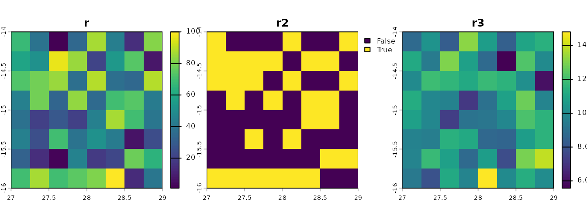
In the preceding code blocks, we created a multi-layer
SpatRast from l, which is a series of rasters
that have the same extent and resolution, which are “stacked” on top of
one another in the order that they are given in the input list. The
stacked layers can come from rasters held in memory, or from any number
of files stored in different areas on disk, or from a multi-layer raster
held in a single file on disk.
Applying plot to a stack or brick results in the
automatic plotting of each layer into its own sub-window, with
coordinates along the plot axes. You can specify numbers of rows and
columns in your plotting device using the “nc” and “nr” arguments to
terra::plot.
Here’s a more informative (by putting it over a map of Zambia) way of
plotting the layers in s. Note the use of ext
in the plot, which we use to make the raster plot extent by the same as
districts, to force the plot outside of
district extent (this doesn’t work for the logical raster,
however):
# Chunk 5
par(mfrow = c(1, 3), mar = c(0, 0, 0, 4))
for(i in 1:nlyr(s)) {
districts %>% st_geometry %>% plot(col = "grey")
plot(s[[i]], add = TRUE, ext = ext(districts))
}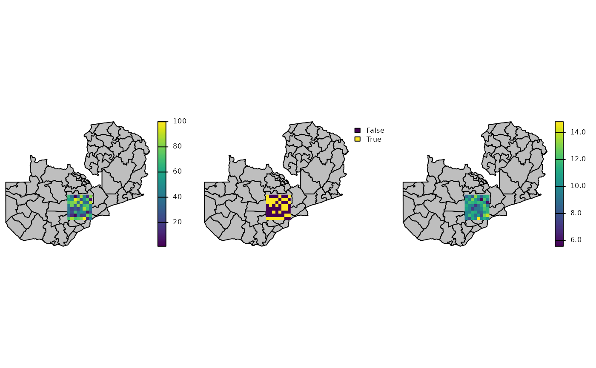
Reading and writing rasters
So far we have used SpatRasters that are held in memory.
Let’s write these out onto disk and then read them back in. Although we
are creating a temporary directory for these in the code below, you
should write these to your notebooks/data folder (per
instructions in Unit 2 module 1
vignette.
# Chunk 6
# #1 - write to disk
writeRaster(r, filename = file.path(tempdir(), "r.tif"))
writeRaster(r2, filename = file.path(tempdir(), "r2.tif"))
writeRaster(r3, filename = file.path(tempdir(), "r3.tif"))
writeRaster(s, filename = file.path(tempdir(), "s.tif"))
# #2 - read back in each individual raster and recreate stack
r <- rast(file.path(tempdir(), "r.tif"))
r2 <- rast(file.path(tempdir(), "r2.tif"))
r3 <- rast(file.path(tempdir(), "r3.tif"))
s <- rast(list(r, r2, r3)) # recreate stack
# #3 - programmatic creation of stack
fs <- dir(tempdir(), pattern = "r.*.tif", full.names = TRUE)
s <- rast(lapply(fs, rast))
# s <- fs %>% lapply(rast) %>% rast # pipeline approach works, too
# #4 - read in single geotiff "brick"
b <- rast(file.path(tempdir(), "s.tif")) In #1 above, we use writeRaster to write out each of the
three individual rasters to a geotiff, and write s to a
three-band geotiff. In #2 we use the rast function to read
back in the individual rasters, and then recreate stack s
from those. #3 is a more programmatic way of doing #2, using the
dir function to read the directory, looking for filenames
matching a pattern, and returning the full paths to the matching files.
These paths are then used in an lapply to read the files in
with rast, recreating list l, which is then
stacked. The pipeline approach that wraps up these commands in one line
is shown commented out below that.
Blocks #2 and #3 illustrate how rast can be used to
create a three-dimensional grid from different files, which differ from
what you see next in #4, where the “s.tif” is read from a single geotiff
“brick”. Note the terms we are using here, “stack” and “brick”, are
leftovers from two separate classes (RasterStack and
RasterBrick) that had separate functions
(stack and brick) under the forerunner
raster package, which were designed to separately handle
the case of combining multiple separate files on disk or reading from or
writing to single multi-layer files. terra only has the
single SpatRast class and rast function now,
which handles all cases.
From vector to raster and back again
Now that you know the SpatRaster class, and how to read
and write it to disk, let’s figure out how to change between raster and
vector types.
Vector to raster
We have several vector datasets that come with geospaar
which we can rasterize, starting with the district boundaries.
# Chunk 7
# #1
zamr <- rast(x = ext(districts), crs = crs(districts), res = 0.1)
values(zamr) <- 1:ncell(zamr)
#
# #2
districts <- districts %>% mutate(ID = 1:nrow(.))
distsr <- districts %>%
rasterize(x = ., y = zamr, field = "ID") %>%
print()
#> class : SpatRaster
#> dimensions : 98, 117, 1 (nrow, ncol, nlyr)
#> resolution : 0.1, 0.1 (x, y)
#> extent : 21.99978, 33.69978, -18.0751, -8.275097 (xmin, xmax, ymin, ymax)
#> coord. ref. : lon/lat WGS 84 (EPSG:4326)
#> source : memory
#> name : ID
#> min value : 1
#> max value : 72
par(mar = c(0, 0, 0, 4))
plot(distsr, axes = FALSE)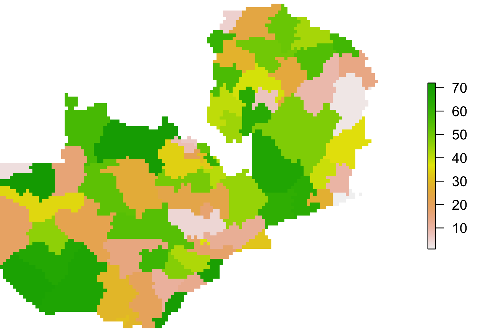
In #1, we took an initial step to define a raster (zamr)
that has the properties of resolution (0.1 decimal degrees), CRS, and
extent that we want our rasterized vector to have. We set the extent of
this raster to that of districts, using extent
to get the bounding box coordinates (extent retrieves the
same parameters as sf::st_bbox, but the output is in a
different format).
In #2, we use rasterize to (as the name says) rasterize
districts. The “y” argument is where we feed in
zamr, the raster object that is the “target” for
rasterizing districts. The “field” argument supplies the
column names of the values that we want rasterized. In this case, we
have to first create an “ID” variable for districts, in
order to give an integer for each district name, as the district names
(a character variable) cannot be written to the raster. Notice that we
have constructed this as a pipeline (with print as the last
step, to show the raster metadata). The commented out code
below it shows how it can be done with more conventional syntax.
Our plot removes the coordinate-labelled axes and box that otherwise drawn around raster plots by default.
Next we rasterize the farmers dataset, which requires a
little more prep to be meaningful:
# Chunk 8
# #1
zamr2 <- rast(x = ext(districts), crs = crs(districts), res = 0.25)
values(zamr2) <- 1:ncell(zamr2)
# #2
farmersr <- farmers %>%
distinct(uuid, .keep_all = TRUE) %>%
dplyr::select(x, y) %>%
mutate(count = 1) %>%
st_as_sf(coords = c("x", "y"), crs = 4326) %>%
rasterize(x = ., y = zamr2, field = "count", fun = sum) %>%
print()
#> class : SpatRaster
#> dimensions : 39, 47, 1 (nrow, ncol, nlyr)
#> resolution : 0.25, 0.25 (x, y)
#> extent : 21.99978, 33.74978, -18.0751, -8.325097 (xmin, xmax, ymin, ymax)
#> coord. ref. : lon/lat WGS 84 (EPSG:4326)
#> source : memory
#> name : lyr.1
#> min value : 1
#> max value : 168
# #3
par(mar = c(0, 0, 1, 4))
districts %>%
st_union %>%
plot(col = "grey", border = "grey",
main = expression(paste("N farmers per 0.25", degree, " cell")))
plot(farmersr, add = TRUE, axes = FALSE)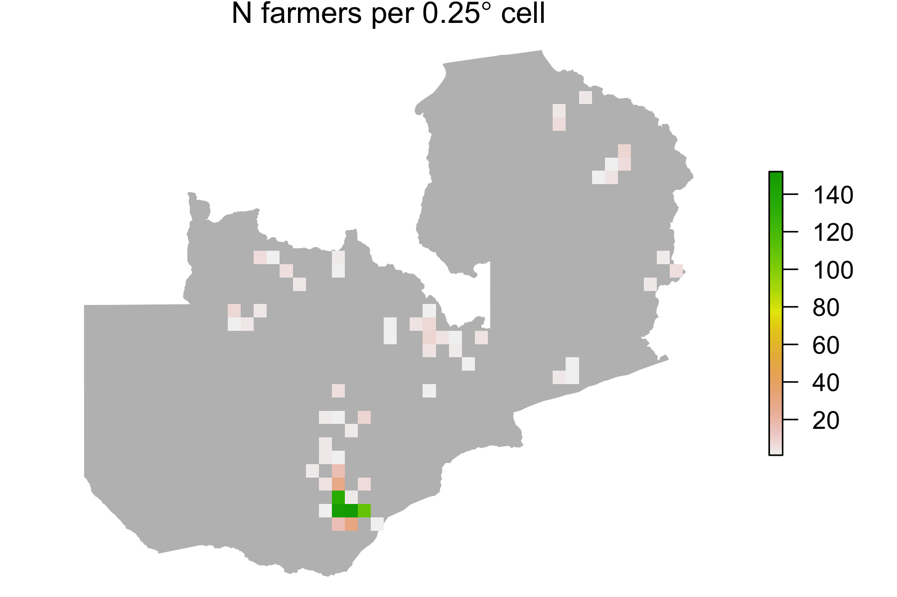
In #1, we create a coarser scale (0.25 degree) version of
zamr (zamr2), because we want our final raster
to count how many farmers responding to our survey are found in each
grid cell. The resolution of 0.1 degrees used for zamr is a
bit too fine to convey the information nicely in a plot.
In #2, we do the rasterization as part of a pipeline. The first two
lines prepare the farmers dataset. Recall that
farmers consists of weekly reporting data sent to us by a
large number of farmers, which means that we have multiple reports sent
by the same farmer (and thus repeated coordinates for each farmer). So
we need to reduce farmers down to just one row for each
individual farmer, so that we have just a single set of coordinates for
each. We do that by using distinct on the uuid
variable, using .keep_all = TRUE so that we retain the
coordinates, and add a new count variable (which assigns a
value of 1 to each farmer) before converting farmers to sf
in the third line. We then rasterize the count
variable, using the sum function to aggregate the number of
farmers per
0.25
grid cell.
The resulting plot (#3) shows that most cells have less than 20
farmers. We add an extra plot decoration step, using
expression with paste to add a superscript
degree symbol to our plot title.
You can also rasterize line features, much as we did for points and
polygons, which is shown below, but not run. The logic for not running
it is that, with the previous raster packages, rasterizing
lines was exceedingly slow, but it is actually quite fast with
terra, so now we don’t run it because the rasterized lines
aren’t that interested. However, there is code below that shows how one
could so that with the roads dataset (subset to roads
greater than 100 km long):
Raster to vector
terra gives us functions that allow us to transform
rasters to vectors, in this case terra’s native vector
class, SpatVector, which we can further coerce to
sf
# Chunk 10
# #1
dists_fromr <- as.polygons(x = distsr, dissolve = TRUE) %>%
print()
#> class : SpatVector
#> geometry : polygons
#> dimensions : 72, 1 (geometries, attributes)
#> extent : 21.99978, 33.69978, -18.0751, -8.275097 (xmin, xmax, ymin, ymax)
#> coord. ref. : lon/lat WGS 84 (EPSG:4326)
#> names : ID
#> type : <int>
#> values : 1
#> 2
#> 3
dists_fromr <- st_as_sf(dists_fromr) %>% print()
#> Simple feature collection with 72 features and 1 field
#> Geometry type: GEOMETRY
#> Dimension: XY
#> Bounding box: xmin: 21.99978 ymin: -18.0751 xmax: 33.69978 ymax: -8.275096
#> Geodetic CRS: WGS 84
#> First 10 features:
#> ID geometry
#> 1 1 MULTIPOLYGON (((32.79978 -1...
#> 2 2 MULTIPOLYGON (((33.59978 -1...
#> 3 3 POLYGON ((21.99978 -12.9751...
#> 4 4 POLYGON ((27.19978 -14.3751...
#> 5 5 POLYGON ((29.29978 -8.37509...
#> 6 6 POLYGON ((27.49978 -12.2751...
#> 7 7 MULTIPOLYGON (((29.99978 -1...
#> 8 8 POLYGON ((27.29978 -12.2751...
#> 9 9 POLYGON ((32.19978 -9.77509...
#> 10 10 POLYGON ((32.39978 -13.0751...
# #2
farmers_fromr <- as.points(x = farmersr) %>%
st_as_sf
par(mar = c(0, 0, 0, 0))
dists_fromr %>%
st_geometry %>%
plot(col = topo.colors(n = nrow(districts)))
farmers_fromr %>%
plot(pch = 20, col = "red", add = TRUE)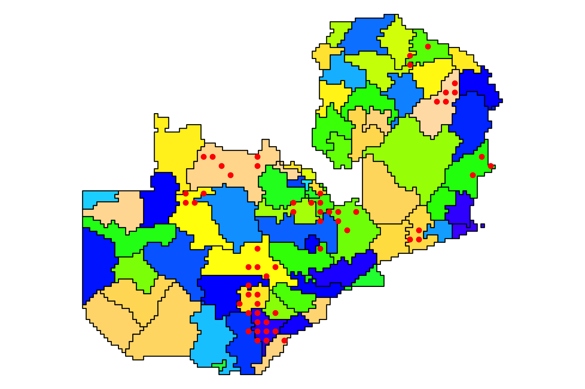
Vectorizing rasters and then vectorizing back again means that you
end up with lower resolution vectors if the raster is fairly coarse. You
will note that this has occurred here, both in converting the rasterized
districts back to polygons (#1) and the rasterized farmer counts back to
points (#2). There are several things to note here. First, we used
different functions for vectorizing polygons and points. Second, we
piped each vectorization output to st_as_sf, because the
endresult of the as.polygons/as.points
functions is a SpatVector object, so the extra step coerces
those to sf.
Projections
Up until now, our SpatRaster data have been in
geographic coordinates systems. Let’s transform these to projected
coordinates, using the rasterized districts as an example.
# Chunk 11
# #1
zamr_alb <- project(x = zamr, y = crs(roads), res = 11000, method = "near")
# #2
distsr_alb <- project(x = distsr, y = zamr_alb, method = "near")
par(mfrow = c(1, 2), mar = c(1, 0.5, 1, 4))
plot(distsr, main = "GCS rasterized districts", axes = FALSE, mar = NA)
plot(distsr_alb, main = "Albers rasterized districts", axes = FALSE, mar = NA)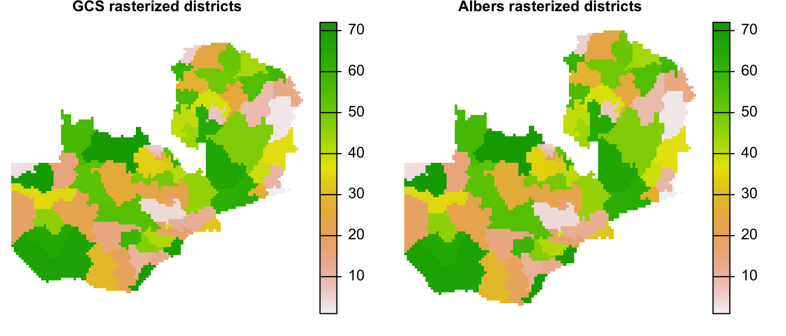
In our first step (#1), we apply project to our
zamr object, transforming it to the Albers projection used
by roads (the “y” argument). We define an output “res” of
11,000 m, or 11 km, which is reasonably close to the 1/10th of a degree
resolution of zamr. We also choose a “method” for
calculating the transformed values in the new raster. In this case,
since zamr has values that are basically an integer index
of grid cells, we use the “near” (nearest neighbor) option, to avoid the
bilinear interpolation that would occur by default (see
?project).
The result, zamr_alb, then becomes a reference raster
(i.e. the raster defining the parameters) for other rasters that need to
be reprojected, which is how we use it when reprojecting
distsr_alb (# 2). In this case, we pass
zamr_alb to the “y” argument, and don’t need the “res”
argument or to specify a CRS (because the function reads those values
from “zamr_alb”). Here we again use the “near” method so that we do not
change the values of the categorical identifier of each district. You
can see how the interpolation choice matters in the plot below, which
compares the bilinear to nearest neighbor method–see how the bilinear
approach changes values along district boundaries?
# Chunk 12
distsr_alb2 <- project(x = distsr, y = zamr_alb, method = "bilinear")
par(mfrow = c(1, 2), mar = c(1, 0.5, 1, 4))
plot(distsr_alb2, main = "Bilinear reprojection", axes = FALSE, mar = NA)
plot(distsr_alb, main = "Nearest neighbor", axes = FALSE, mar = NA)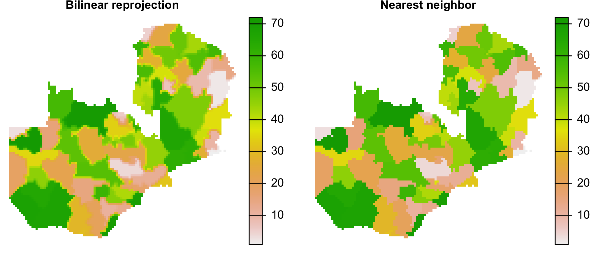
A bilinear interpolation is more appropriate for a raster of
continuous values, or one where it makes sense to have values averaged
during the reprojection process, such as the farmersr
dataset.
Practice
Questions
What is a primary difference between
sfands4object classes?What function should you use to read and write a multi-layer raster?
What are the differences between
stackandbrick?What class of object do
terra’s vectorization functions produce?
Code
Create a new raster
r4, usingr3(above) as a template. Update the values ofr4using numbers randomly selected from a uniform distribution ranging between 0 and 1. Create another rasterr5by finding the values greater than 0.5 in r4. Recreate the listlwithr,r2,r3,r4, andr5, and then create and plot stacks2.Create a new brick
b2by applying therastfunction to writes2and to disk asb2.tif, specifying the path to yournotebooks/datafolder.Following the steps in Chunk 8, recreate
farmersrby re-rasterizingfarmersat a 0.2 degree resolution. Plot the result.Project the new 0.2 degree resolution
farmersrto an Albers projection with a target resolution of 20 km (20,000 m), calling itfarmersr_alb. Chunk 11 is your guide, but reproject using a bilinear rather than nearest neighbor interpolation (see?project). Make a two panel plot comparingfarmersron the left, plotted over the unioned districts of Zambia in grey, withfarmersr_albon the right, plotted over the unioned districts of Zambia in grey (and transformed to Albers). Code in Chunks 8 and 11 can help.Convert
distsrto ansfpolygons object, usingas.polygons. Plot the result without coercing tost_geometry.
Pre-processing and local to global statistics
This unit starts to focus on some of the analyses you can do with raster data, focusing specifically on calculating statistics from rasters. We will start in on that after doing a bit more raster processing and preparation.
Pre-processing
We will keep working with the data from the previous sections, adding
in a new dataset that loads with geospaar,
chirps.
# Chunk 13
chirps <- rast(system.file("extdata/chirps.tif", package = "geospaar"))Since we are recycling some of the objects from the previous section but you might have cleared your workspace, here is code that will allow you to quickly rebuild the datasets we will use in this next section, without having to hunt back through the previous section to find it.
zamr <- rast(x = ext(districts), crs = crs(districts), res = 0.1)
values(zamr) <- 1:ncell(zamr)
distsr <- system.file("extdata/districts.geojson", package = "geospaar") %>%
st_read %>%
mutate(ID = 1:nrow(.)) %>%
rasterize(x = ., y = zamr, field = "ID")
zamr2 <- rast(x = ext(districts), crs = crs(districts), res = 0.25)
farmersr <- system.file("extdata/farmer_spatial.csv", package = "geospaar") %>%
read_csv() %>%
distinct(uuid, .keep_all = TRUE) %>%
dplyr::select(x, y) %>% mutate(count = 1) %>%
st_as_sf(coords = c("x", "y"), crs = 4326) %>%
rasterize(x = ., y = zamr2, field = "count", fun = sum)There a few important things we missed doing in the first section.
But first let’s talk about the new data we just loaded,
chirps. We have a help file in geospaar
describing the dataset, which provides daily rainfall values at ~5 km
resolution, estimated from satellite observations (of cloud top
temperature, I believe) and corrected by weather station observations.
CHIRPS is a near global product that extends back to the 1970s (read
more about it here),
but we have just subset 28 days of data over Zambia.
# Chunk 14
chirps
#> class : SpatRaster
#> dimensions : 197, 234, 28 (nrow, ncol, nlyr)
#> resolution : 0.05, 0.05 (x, y)
#> extent : 21.95, 33.65, -18.05, -8.200001 (xmin, xmax, ymin, ymax)
#> coord. ref. : lon/lat WGS 84 (EPSG:4326)
#> source : chirps.tif
#> names : Y16299, Y16300, Y16301, Y16302, Y16303, Y16304, ...
#> min values : 0.00000, 0.00000, 0.00000, 0.00000, 0.00000, 0.0000, ...
#> max values : 21.33322, 17.76521, 22.12555, 32.39063, 19.46936, 28.5387, ...
# names(chirps) <- paste0("Y", 16299:16326)
names(chirps)
#> [1] "Y16299" "Y16300" "Y16301" "Y16302" "Y16303" "Y16304" "Y16305" "Y16306" "Y16307" "Y16308"
#> [11] "Y16309" "Y16310" "Y16311" "Y16312" "Y16313" "Y16314" "Y16315" "Y16316" "Y16317" "Y16318"
#> [21] "Y16319" "Y16320" "Y16321" "Y16322" "Y16323" "Y16324" "Y16325" "Y16326"That tells us a bit more about the chirps subset that we
have, including the names for each layer, which correspond to the
particular day in the rainfall time series, beginning with Y16299 (Y16 =
2016, 299 = julian day 299, or October 25th) and ending with Y16326
(11/22/2016).
Let’s have a look at a few of the days in chirps:
# Chunk 15
par(mfrow = c(1, 3), mar = c(0, 0, 1, 4))
for(i in 1:3) {
leg <- ifelse(i == 3, yes = TRUE, no = FALSE) # 1
plot(chirps[[i]], main = names(chirps)[[i]], axes = FALSE,
zlim = c(0, max(chirps[1:3])), legend = leg, mar = NA) # 2
plot(st_union(districts), add = TRUE)
}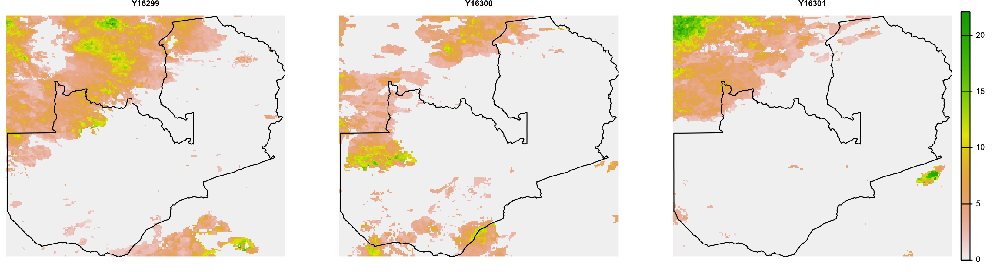
The above plots the first three dates in chirps and
drapes Zambia’s outline over it. These data are obviously not just
confined to Zambia, so that sets up our next set of processing steps we
need to do. But let’s first examine the plotting code a bit more, which
shows us two new things. First, there is the use of ifelse,
which we use to set up a conditional placement of a legend for iteration
3. When i == 3, we tell plot to add the legend
to the figure panel being plotted by making the variable
leg == TRUE (otherwise it is FALSE).
leg is passed to the “legend” argument of
plot. We did this because we wanted just one legend that
reflects the range set by the “zlim” argument within plot.
“zlim” sets a limit on the range of data values that are plotted, which
in this case falls between 0 and the maximum rainfall value observed
across all three of the plotted dates (max(chirps[1:3])).
That gives all three plots a common scale, so, given that, why clutter
up the plots with three legends showing the same thing?
The second thing: we haven’t discussed this yet, but you will see in
the example above that indexing into a SpatRaster to select
a particular layer or layers is achieved through [[]]. This
applies to both single ([[x]]) and multiple/recursive
([[x:y]]) indexing, which differs from indexing into a
list, where you use [x:y] for multiple
selection. Selection by layer names also works
(chirps[[c("Y16299", "Y16300")]];
chirps[["Y16299"]])
Masking
We are interested in the rainfall data within Zambia’s borders, so we
need to mask out the values of chirps that fall outside of
Zambia:
# Chunk 16
test_m <- mask(x = chirps[[1]], mask = districts)
plot(test_m, axes = FALSE, mar = c(1, 0.5, 1, 4)) 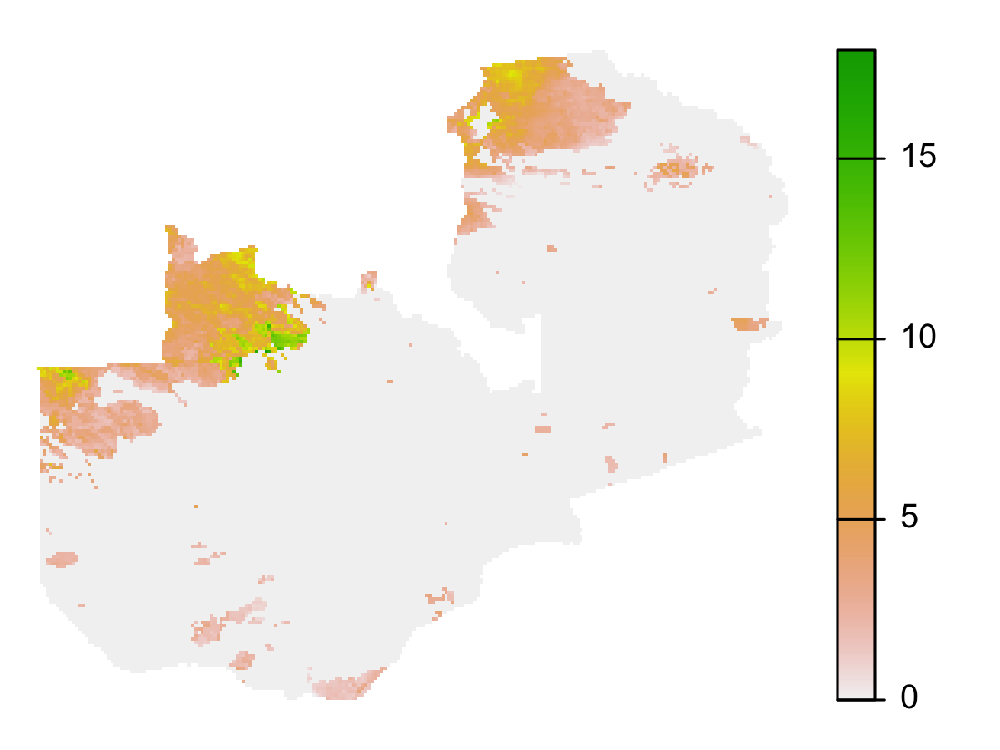
In the code above, we use the districts data to
mask out the portions of chirps (the first day
in the time series only) falling outside of Zambia. Let’s apply that to
the entire chirps dataset:
# Chunk 17
chirpsz <- mask(x = chirps, mask = districts)
set.seed(1)
ind <- sample(1:nlyr(chirpsz), size = 3)
plot(chirpsz[[ind]], axes = FALSE, nr = 1, mar = c(1, 0.5, 1, 4))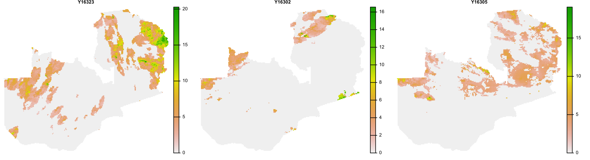
The new chirpsz dataset contains all rainfall days with
the values outside of Zambia converted to NA. The three plots are
randomly selected from the layers of chirpsz, as a check to
confirm that the masking was applied to all layers.
Cropping
If we need to chop a raster down to a smaller region, we can
crop it. crop uses the extent of another
object to achieve this.
# Chunk 18
chirps1_dist72 <- crop(x = chirpsz[[1]], y = districts %>% slice(72))
plot(chirps1_dist72, axes = FALSE, mar = c(1, 0.5, 1, 4))
plot(st_geometry(districts), add = TRUE)
districts %>%
st_centroid %>%
st_coordinates %>%
text(x = ., labels = 1:nrow(.))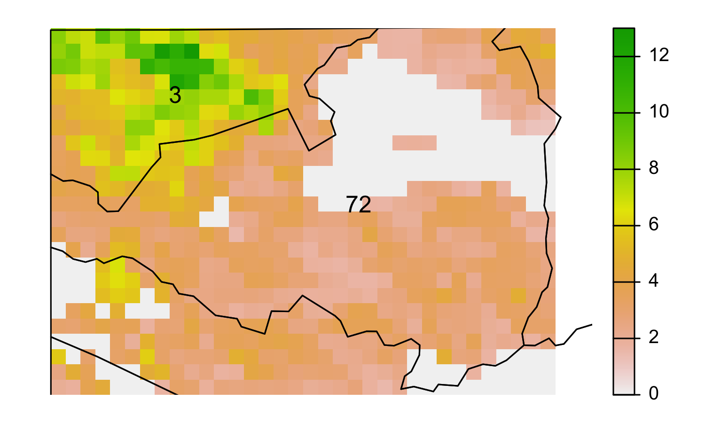
The above uses the extent of district 72 (dist72) to
crop the first layer of chirpsz. Note that in the plotting
step we can pipe the cropped raster to plot, and also that
we can label the district numbers on the plot by extracting their
centroid coordinates and passing these into the “x” argument of
text, and then using the nrow of the piped-in
data.frame of centroid coordinates as the labels.
Cropping is important if we want to confine further analyses to a particular sub-region. However, if we just want to focus our plot to a particular region, then we can simply zoom the plot to that region (without cropping) using an extent object.
# Chunk 19
plot(chirpsz[[1]], axes = FALSE, ext = ext(districts[72, ]),
mar = c(1, 0.5, 1, 4))
plot(st_geometry(districts), add = TRUE)
districts %>%
st_centroid %>%
st_coordinates %>%
text(x = ., labels = 1:nrow(.))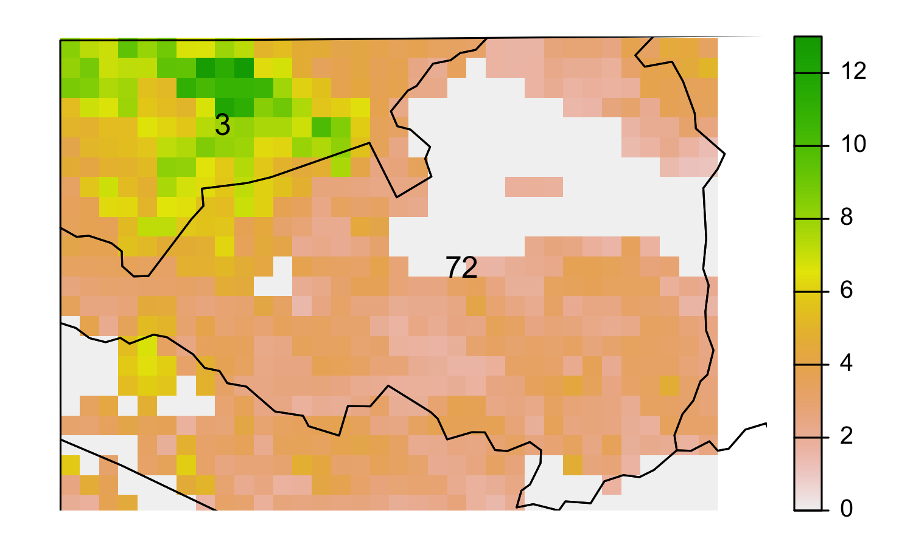
A function-writing detour
As we write this, we find ourselves growing weary of repeatedly
writing “axes = FALSE, box = FALSE” into the plot function,
even with RStudio’s handy tab completion. This repeated use of the exact
same code is the sort of situation that calls for writing your own
function.
# Chunk 20
plot_noaxes <- function(x, axes = FALSE, box = FALSE, mar = c(1, 0.5, 1, 4),
...) {
if(!class(x) %in%
c("RasterLayer", "RasterStack", "RasterBrick", "SpatRaster")) {
stop("This function is intended for rasters only", call. = FALSE)
}
par(mar = mar)
if(class(x) %in% c("RasterLayer", "RasterStack", "RasterBrick")) {
plot(x, axes = axes, box = axes, ...)
} else {
plot(x, axes = axes, mar = NA, ...)
}
}The function above (not run in the block above, because it is written
into geospaar) takes care of the axes and box problem by
setting their default arguments to FALSE. It also sets the default plot
margins to the ones we have mostly been using so far, and it checks
whether the object being passed to it belongs to one of the raster
classes (either from the older raster package or from
terra), failing if it doesn’t. Otherwise, it retains all of
the other functionality of raster::plot and
terra::plot, and has the “…” argument, meaning you can pass
other eligible arguments to it.
Let’s see how it works:
# Chunk 21
plot_noaxes(chirpsz[[1]])
# chirpsz[[1]] %>% plot_noaxes # also works in a pipeline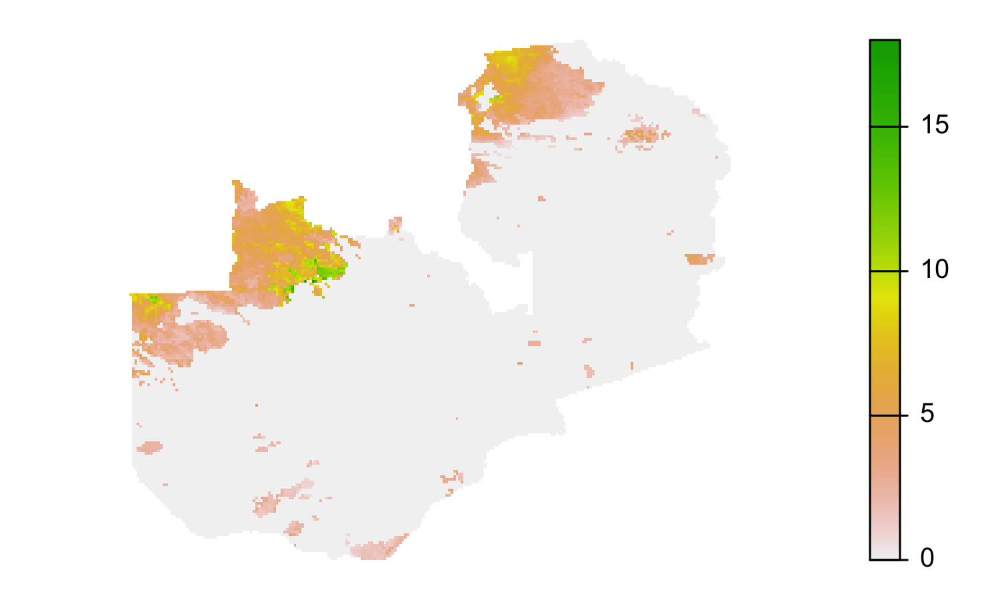
That will make plotting easier moving forward.
Aggregating/disaggregating
To change to resolution of a raster object, you can use
aggregate to make a coarser resolution, or disaggregate to
decrease the resolution. To make chirpsz match the 0.1
resolution of distsr (the rasterized districts), we do
this:
# Chunk 21
chirpsz1agg <- aggregate(x = chirpsz[[1]], fact = 2, fun = mean)
chirpsz1agg
#> class : SpatRaster
#> dimensions : 99, 117, 1 (nrow, ncol, nlyr)
#> resolution : 0.1, 0.1 (x, y)
#> extent : 21.95, 33.65, -18.1, -8.200001 (xmin, xmax, ymin, ymax)
#> coord. ref. : lon/lat WGS 84 (EPSG:4326)
#> source : memory
#> name : Y16299
#> min value : 0.00000
#> max value : 12.18843 We aggregate the first layer of chirpsz by a factor of 2
(fact = 2), taking the average of the aggregated pixels
(fun = mean). Since the starting resolution was 0.05,
doubling the pixel size takes it to 0.1. We could have chosen to
aggregate all layers, and we could have chosen a different aggregation
function (e.g. sum, max).
To disaggregate, there are two options:
# Chunk 22
chirpsz1km <- disagg(x = chirpsz[[1]], fact = 5)
# chirpsz1km <- disagg(x = chirpsz[[1]], fact = 5, method = "bilinear")
chirpsz1km
#> class : SpatRaster
#> dimensions : 985, 1170, 1 (nrow, ncol, nlyr)
#> resolution : 0.01, 0.01 (x, y)
#> extent : 21.95, 33.65, -18.05, -8.200001 (xmin, xmax, ymin, ymax)
#> coord. ref. : lon/lat WGS 84 (EPSG:4326)
#> source : memory
#> name : Y16299
#> min value : 0.00000
#> max value : 18.00534 The first option is the default one, which just breaks apart each
pixel into the number of smaller new pixels specified by the factor,
assigning each new pixel the same value as its larger parent. Here we
specified a factor of 5, leading to an output resolution of 0.01 (~1
km), and thus 25 times the number of pixels as in the original
chirpsz[[1]] (run
ncell(chirpsz1km) / ncell(chirpsz[[1]]) to see).
The second way (commented out), is to set
method = bilinear, which interpolates during
disaggregation. In this case, disaggregate does the job
using the resample function, which we will see next.
Resampling
Resampling is done for many reasons, but one particularly common case is as a final step following aggregation or disaggregation, when it is needed to co-register the resulting grid to another grid.
# Chunk 23
chirps125 <- aggregate(x = chirpsz[[1]], fact = 5) # no fun b/c default is mean
s <- c(chirps125, farmersr) # fails
par(mar = c(1, 1, 1, 1))
plot(ext(chirps125), axes = FALSE, border = "blue")
plot(ext(farmersr), add = TRUE, border = "red")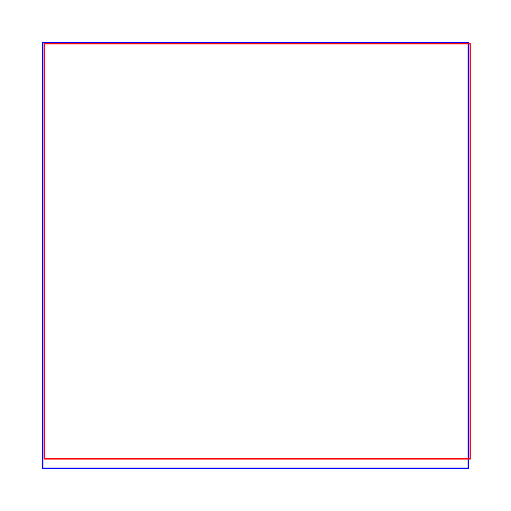
After aggregating chirpsz layer 1, we try and fail to
stack the result with farmersr, because (as the plot of
extents show, and the warning tells) the two objects have different
extents. So, another approach is needed:
# Chunk 24
farmersr_rs <- resample(x = farmersr, y = chirps125)
s <- c(chirps125, farmersr_rs)
names(s) <- c("rain", "farmer_count")
plot_noaxes(s)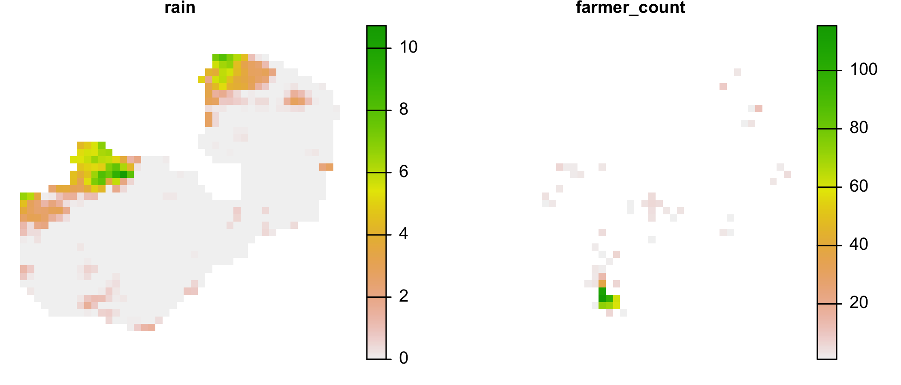
We resample farmersr to chirps125rs, since
chirps125rs has the larger extent. However, there is one
more thing we should do before using these data, and that is an
adjustment to farmersr. Have a look at this:
plot_noaxes(s$farmer_count >= 0)
plot(st_geometry(st_union(districts)), add = TRUE)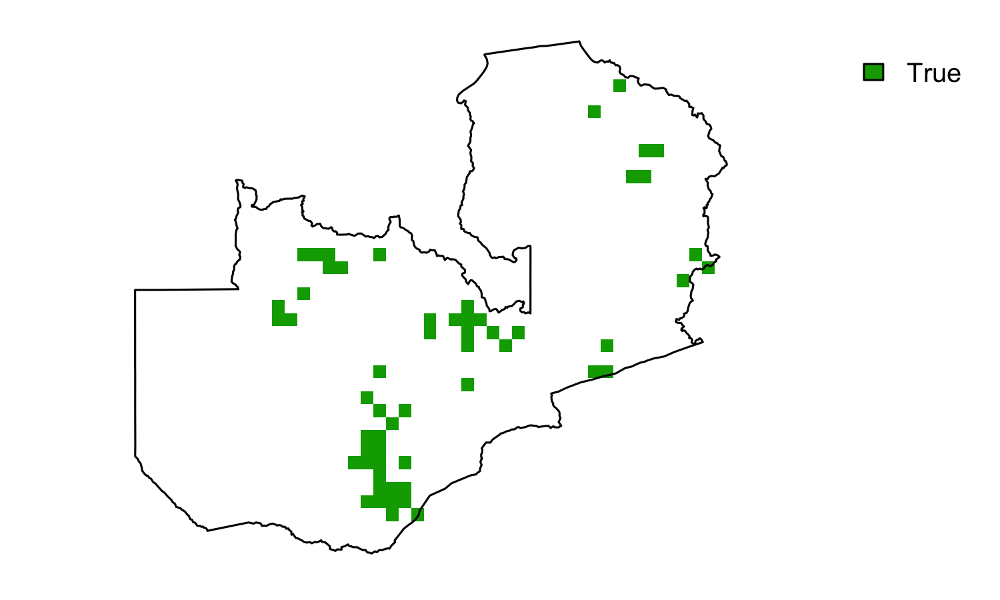
This shows that there are no places where there are 0 farmers–because
the original data contributing to farmersr (the second
layer in s) was derived from point locations representing
the approximate locations of where farmers were interviewed. The data
thus have no points where there were 0 farmers interviewed (it would be
silly to conduct an interview with no subject), thus everywhere outside
of interview locations is assigned a no data value. These are not
analyzed in raster operations. So we have to fix this if we want to have
the full area of Zambia in the second layer of our stack.
s$farmer_count[is.na(s$farmer_count)] <- 0
s$farmer_count <- mask(s$farmer_count, s$rain)
plot_noaxes(s$farmer_count)
plot(st_geometry(st_union(districts)), add = TRUE)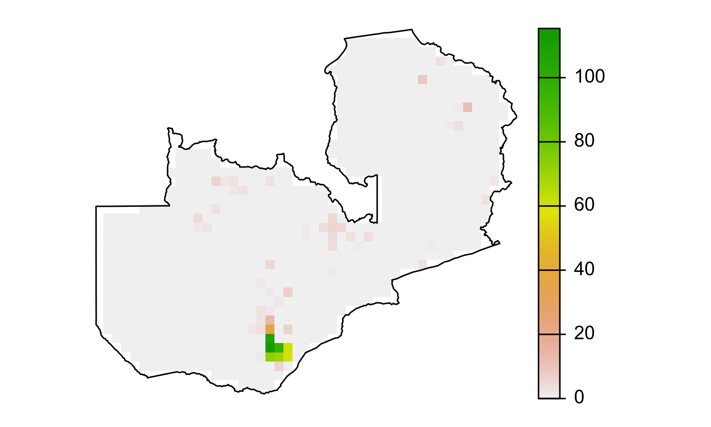
Now all the areas ins$farmer_counts where no interviews
were conducted area set to 0.
We can then stack and perform subsequent analyses that draw on both layers, e.g. finding areas where rainfall exceeded 1 mm and where there was more than 1 farmer:
# Chunk 25
plot_noaxes(s$farmer_count > 1 & s$rain > 1)
# (s$rain > 1 & s$farmer_count > 1) %>% plot_noaxes # also works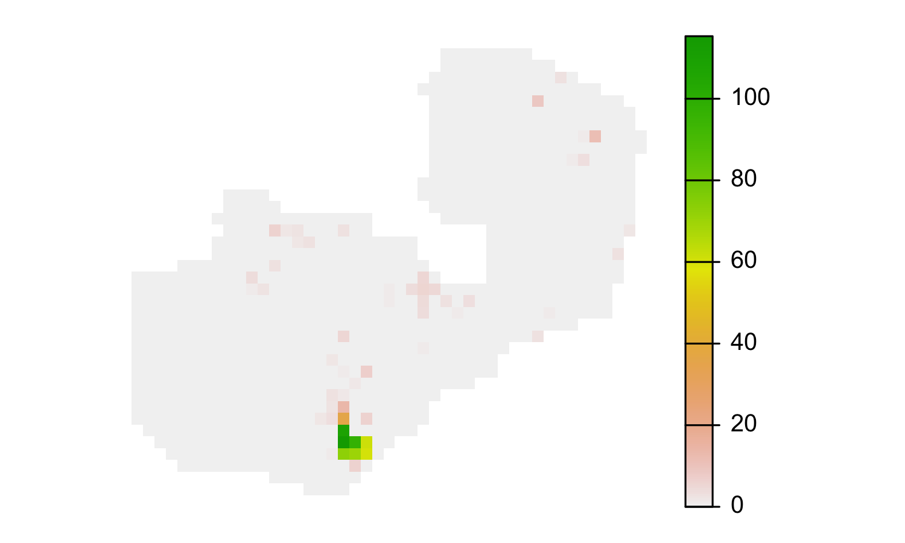
Analyses
Let’s move on now to some analyses with raster data.
Global statistics
The most basic analyses to perform on rasters is to calculate global summary statistics, i.e. statistics calculated across all cell values:
# Chunk 26
global(x = chirpsz[[1]], stat = "mean", na.rm = TRUE) # for a single date
#> mean
#> Y16299 0.7139887
global(x = chirpsz[[c(5, 7, 14)]], stat = "mean", na.rm = TRUE)
#> mean
#> Y16303 0.4047794
#> Y16305 0.9029626
#> Y16312 0.5260241
summary(chirpsz[[1:3]])
#> Y16299 Y16300 Y16301
#> Min. : 0.000 Min. : 0.000 Min. :0.000
#> 1st Qu.: 0.000 1st Qu.: 0.000 1st Qu.:0.000
#> Median : 0.000 Median : 0.000 Median :0.000
#> Mean : 0.714 Mean : 0.633 Mean :0.114
#> 3rd Qu.: 0.000 3rd Qu.: 0.000 3rd Qu.:0.000
#> Max. :18.005 Max. :17.765 Max. :9.344
#> NA's :20408 NA's :20408 NA's :20408 global lets you calculate specific statistics from the
cell values of a lone SpatRaster, or for a single,
multiple, or all layers in a SpatRaster layer.
summary (a generic) returns the quintile values and counts
the number of NA or no data cells. Both functions by
default remove NA values (which are in many if not most rasters), which
is something that usually has to be specified when trying to apply these
statistical functions to an ordinary vector, e.g.
v is a vector of all of the values from the first layer
in the rainfall brick, including its NA values. mean
returns an NA if you don’t tell the function to remove
NA values first. This is important to remember, because
both spatial and non-spatial data often have missing values, so you will
have to deal with them explicitly in many cases.
Here’s a more programmatic way of using cellStats:
# Chunk 28
# #1
cv <- function(x, na.rm) {
cv <- sd(x, na.rm = na.rm) / mean(x, na.rm = na.rm) * 100
return(cv)
}
rain_stats <- lapply(list(mean, sum, sd, cv), function(x) {
global(x = chirpsz, fun = eval(x), na.rm = TRUE)
})
names(rain_stats) <- c("mean", "sum", "sd", "cv")
# #2
rain_statsf <- do.call(cbind, rain_stats) %>% data.frame %>%
mutate(date = as.Date(gsub("Y", "", row.names(.)), "%y%j")) %>%
rename(cv = global)
# do.call(cbind, rain_stats) %>% data.frame
# do.call(cbind, rain_stats) %>% row.names %>% gsub("Y", "", .)
# do.call(cbind, rain_stats) %>% row.names %>% gsub("Y", "", .) %>%
# as.Date(., "%y%j")
# #3
ps <- lapply(c("mean", "sum", "sd", "cv"), function(x) { # x <- "mean"
ggplot(rain_statsf %>% dplyr::select(date, all_of(x))) +
geom_line(aes_string("date", x)) + xlab("")
})
cowplot::plot_grid(plotlist = ps)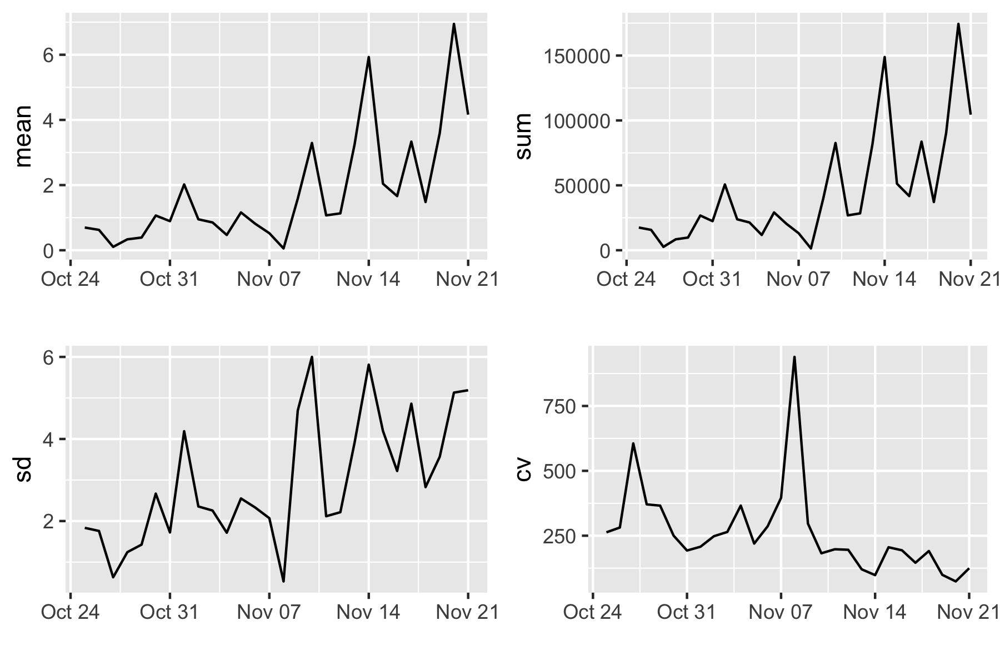
In #1 we use lapply to calculate 4 different statistics
over all dates in chirpsz, meaning that we get a time
series for each statistic as calculated over all of Zambia.
In #2, we use a pipeline to bind the summary time series vectors into
a data.frame (one statistic per column), and then do some
gymnastics to convert the row names of the data.frame,
which are constructed from the layer names of chirpsz
(which are stored as “Y16XXX”, where XXX is the julian day) to a vector
of dates. Work through the commented out code below this line, which
breaks down the steps used to create the date variable.
gsub first replaces the “Y” in each name, and then
as.Date parses the remaining numbers into an actual date.
The “%y%j” construction tells as.Date which parts of the
character string relate to which part of a date: %y = two digit year; %j
= julian day; placed next to one another %y%j means these two elements
are immediately adjacent to one another in the string.
We use lapply to set up four ggplot objects
in #3 (note the use of aes_string rather than
aes, which allows the variable names to be passed as
string, rather than unquoted), and then use
cowplot::plot_grid to put those plots in a grid, using the
“plotlist” argument to receive the input list of
ggplots.
The results in the plot above are actually quite interesting. The top two panels show when the rainy season gets underway in earnest (just after Nov 8). The bottom two panels show two measures of variability, the standard deviation (SD) and coefficient of variation (CV, i.e. SD / mean). These two measures summarize the spatial variability of rainfall falling across Zambia on each day–SD increases as the amount of rain increases (which is expected–SD is often positively correlated with the mean), whereas CV declines as rainfall increases, indicating that a progressively larger area of the country receives rainfall as the month progresses, so there is less spatial variability. There is a big spike in CV on November 8, which corresponds to a drop in mean and total rainfall. However, that drop masks the fact that there are a few small patches that received a decent amount of rainfall, thus leading to a high CV (see next plot below).
# Chunk 29
plot_noaxes(chirpsz[[15]], main = paste("CV =", round(rain_stats$cv[15, ])))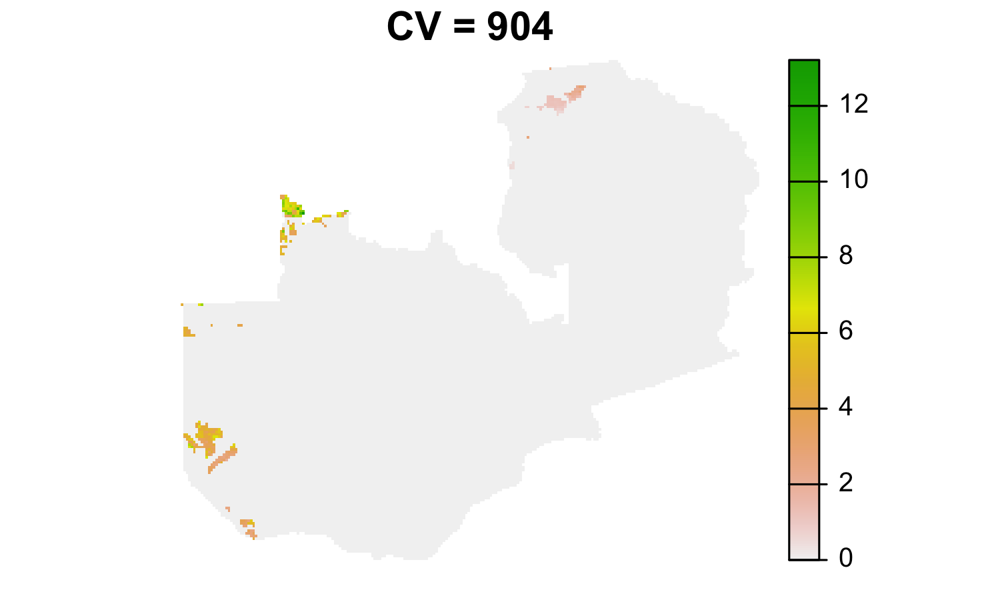
Another way to summarize raster data is visually, using a histogram
(terra has a generic hist function)
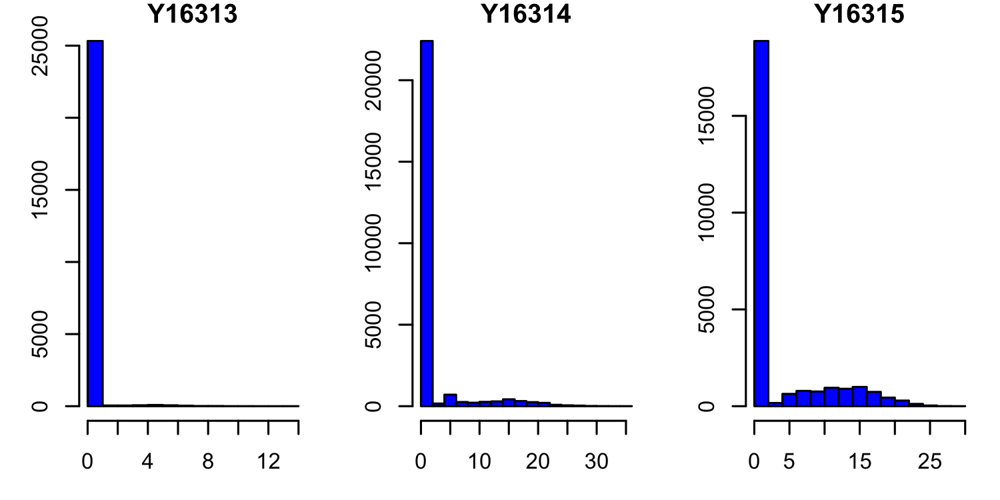
This variant plots a histogram per layer in the
SpatRaster object (but we told it to plot 1 row, 3 columns,
instead of the default (2 rows, 2 columns)).
freq is another way to summarize raster values that is
similar to hist but without the automatic plot.
# Chunk 31
f <- freq(chirpsz[[1]]) %>% print()
#> 1 1 0 21464
#> 2 1 1 243
#> 3 1 2 720
#> 4 1 3 845
#> 5 1 4 683
#> 6 1 5 578
#> 7 1 6 451
#> layer value count
#> 8 1 7 324
#> 9 1 8 187
#> 10 1 9 66
#> 11 1 10 46
#> 12 1 11 41
#> 13 1 12 27
#> 14 1 13 7
#> 15 1 14 3
#> 16 1 15 2
#> 17 1 16 2
#> 18 1 18 1Here we apply freq to a dataset with continuous values,
although this function is probably best reserved for categorical
rasters. However, it produces reasonable results here.
Local statistics
The previous section showed us how to produce statistics calculated across the entire raster. Now we will learn to calculate local, or neighborhood, statistics.
Zonal
One way local statistics can be calculated is by defining zones and then calculating statistics within those zones.
# Chunk 32
# #1
# zonemu <- zonal(x = chirpsz, z = distsr, fun = "mean") # fails b/c extent
# #2
distsr_rs <- resample(x = distsr, y = chirpsz, method = "near") # match extent
zonemu <- zonal(x = chirpsz, z = distsr_rs, fun = "mean", na.rm = TRUE)
head(zonemu)[, 1:5]
#> ID Y16299 Y16300 Y16301 Y16302
#> 1 1 0.000000000 0.0000000 0.00000000 2.2846139
#> 2 2 0.003991558 0.0000000 0.00000000 0.0000000
#> 3 3 5.953492256 1.8929411 0.00000000 4.5056428
#> 4 4 0.000000000 0.2888773 0.02768079 0.0000000
#> 5 5 6.192370279 3.5039883 1.26554866 0.5046411
#> 6 6 0.000000000 0.0000000 0.00000000 0.0000000That creates a data.frame (truncated here to show the
first 6 rows and 5 columns) of mean rainfall within each zone (
district), by date. The first attempt to run zonal (#1)
would have failed because of mismatched extents (and therefore was
commented out so it wouldn’t run), so we used resample in
#2 to align extents before re-running zonal.
To map zonal statistics back onto their zones, we need to use another
function, subs.
# Chunk 33
subsmat <- zonemu %>% dplyr::select(1:2)
distr_rfmu <- subst(x = distsr_rs, from = subsmat[, 1], to = subsmat[, 2])
plot_noaxes(distr_rfmu)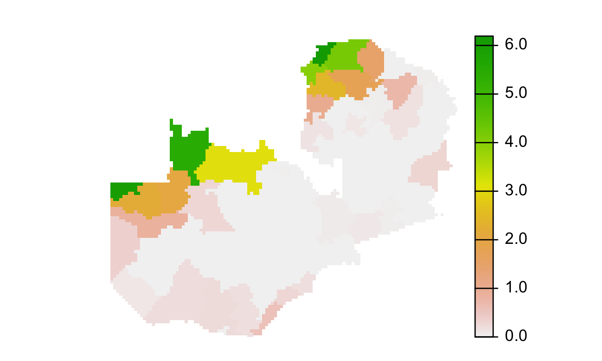
subst replaces the values in a raster by other values
contained within a matrix that correspond to a variable
that has the same values as those in the raster (in this case the
district IDs).
Focal
Another way of calculating image statistics is to use a moving
window/neighborhood approach. This is done with the focal
function, which can be used to calculate a large number of different
statistics. Here’s we’ll just show you the mean (also known as a low
pass filter), with a few permutations to illustrate the concept.
Disclaimer: This section assumes that you have applied
moving window functions/low pass/high pass filters in your GIS/remote
sensing classes so far, and thus are familiar with the calculations. If
not, please be sure to ask about this in class.
# Chunk 34
# #1
wmat <- matrix(1 / 9, nrow = 3, ncol = 3)
chirps1_focmu1 <- focal(x = chirpsz[[1]], w = wmat)
# #2
wmat <- matrix(1, nrow = 3, ncol = 3)
chirps1_focmu2 <- focal(x = chirpsz[[1]], w = wmat, fun = mean)
# #3
wmat <- matrix(1, nrow = 5, ncol = 5)
chirps1_focmu3 <- focal(x = chirpsz[[1]], w = wmat, fun = mean)
# #4
wmat <- matrix(1, nrow = 5, ncol = 5)
chirps1_focmu4 <- focal(x = chirpsz[[1]], w = wmat, fun = mean, na.rm = TRUE)
# #5
wmat <- matrix(1 / 9, nrow = 5, ncol = 5)
chirps1_focmu5 <- focal(x = chirpsz[[1]], w = wmat, na.rm = TRUE)
# plots
l <- list(chirps1_focmu1, chirps1_focmu3, chirps1_focmu4, chirps1_focmu5)
titles <- c("3X3 NAs not removed", "5X5 NAs not removed",
"5X5 NAs removed properly", "5X5 NAs removed improperly")
par(mfrow = c(2, 2))
for(i in 1:length(l)) {
plot_noaxes(l[[i]], main = titles[i])
}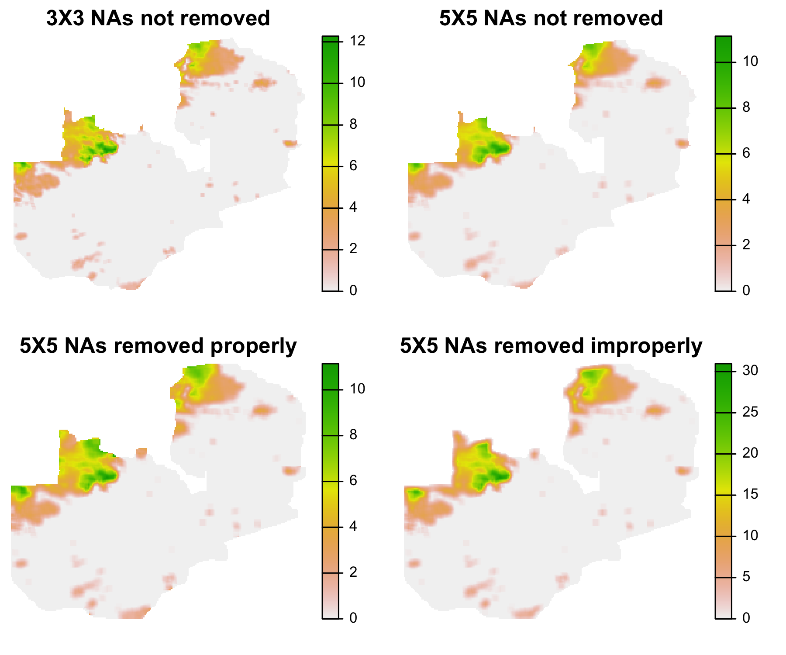
We have 5 variants above. In #1, we calculate the focal mean the recommended way, which is to:
- Define a matrix (
wmat) that contains the weights thatfocalapplies to each pixel when making neighborhood calculations. In this case, the matrix is 3X3, which is the size of our moving window, and the weights are distributed equally across all pixels and sum to 1 (each gets a weight of 1/9) -
focalthen passes over each pixel, and multiplies those weights by each pixel value in the neighborhood, and then sums those to get the mean - It sums the values because
sumis the default value of the argument “fun” in the functionfocal, which is why we have not even specified the argument “fun” in Block 1
Note that the way focal is coded here does not remove NA
pixels, thus any neighborhood having even a single NA pixel is itself
turned into NA, i.e. all 9 pixels in the neighborhood. Thus the entire
boundary of Zambia is trimmed down accordingly (by 2 pixels). This
result is illustrated in the upper left panel of the plot above.
The code in #2 does the same thing. It passes the mean
function to focal’s “fun” argument. The weights matrix in
this case has 1s throughout; since we are not using the default
“fun=sum” in focal and mean is doing the work,
we can’t modify (by weighting) the pixel values if we want the correct
mean. We also do not remove NA values from the calculation, so the
results are nearly identical (and thus not plotted), except for very
minor rounding issues (see section 1 of the R
Inferno for more about this).
In #3, we use the same approach as in #2, but expand the neighborhood to 5X5. You will see in the upper right plot that Zambia shrank even more (by 4 pixels).
In #4, we again pass mean to focal, and
have a 5X5 neighborhood, but here we specify na.rm = TRUE,
which means that focal passes TRUE to the “na.rm” argument
of mean. This results in NAs being removed from each
neighborhood before calculating the mean, thus boundary pixels are not
lost (note the larger area in the lower left plot above). This is the
correct way to remove NAs when calculating focal means.
The improper way of removing NAs from focal calculations is shown in #5, this time using the faster approach demonstrated in Block 1. The lower right plot shows how pixels near Zambia’s border have artificially low values. This result is because the approach relies on a weighted mean, and because NAs are removed, the weights do not sum to 1 and thus the mean is underestimated.
Analyzing the Z dimension
If we have a SpatRaster with more than one layer, we
have three dimensions (x, y, z). Often we want to analyze the values in
the Z dimension (which may represent time, spectral bands, or unrelated
spatial predictors in a model) without altering the x and y
dimensions.
The workhorse for doing this sort of analysis is app,
which allows you to apply pretty much any function to the Z-dimension of
a multi-layer SpatRaster.
# Chunk 35
# #1
rain_zmu <- app(x = chirpsz, fun = mean)
rain_zsd <- app(x = chirpsz, fun = sd)
rain_zrng <- app(x = chirpsz, fun = range)
# #2
rain_zstack <- c(rain_zmu, rain_zsd, rain_zrng)
names(rain_zstack) <- c("Mean", "StDev", "Min", "Max")
plot_noaxes(rain_zstack)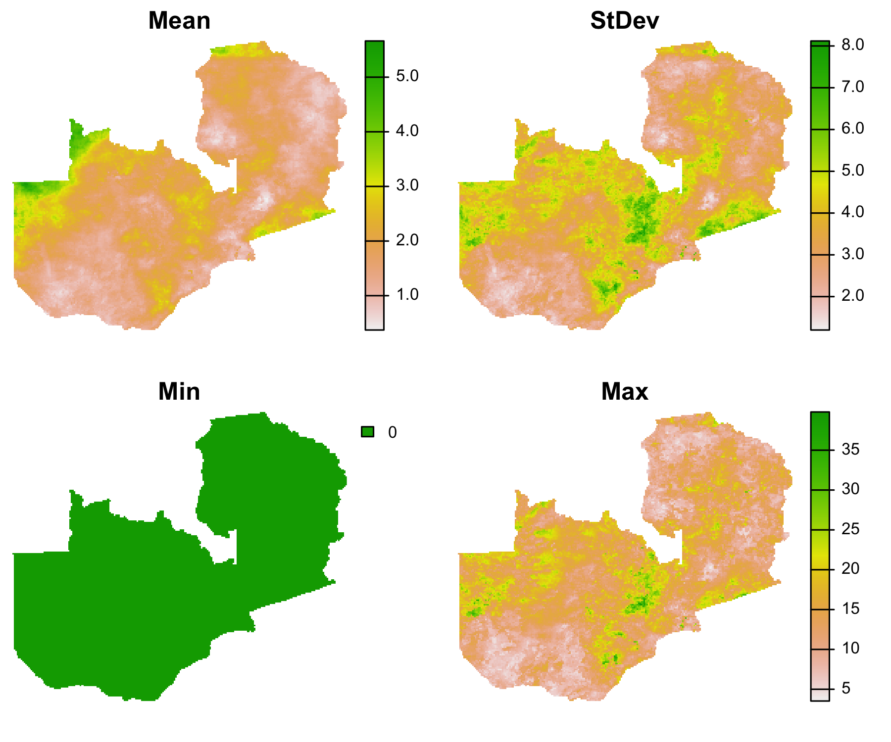
In #1 we pass mean, sd, and
range to “fun” in app. Note that
range always returns two values, so app
conveniently returns a two-layer SpatRaster that contains
the minimum in the first layer and the maximum in the second.
In #2 we then stack the three outputs, and rename the layers
something meaningful so that plot_noaxes can plot them all
at once.
You will see from the resulting plot that “Min” has only one value, 0, which makes sense for a rainfall time series (every pixel is likely to have at least one day of no rainfall over the course of a month).
Practice
Questions
How do
global,focal, andzonaldiffer from one another?How do you
disagga raster with interpolation?How do you run
appon images with different resolutions or extents?
Code
Run
as.Date("10-11-2017", "%m-%d-%Y"),as.Date("10-11-17", "%m-%d-%y"),as.Date("101117", "%m%d%y"), andas.Date("10112017", "%m%d%Y")to get a better sense of date vectors work. Also try outlubridate::mdy("10-11-2017")andlubridate::as_date("20171011").Convert
farmersto a 0.1 degree raster (farmersr2) that contains the count of farmers per grid cell. Usedistsras the target raster so that the extents align.Use
zonalonfarmersr2to calculate the total number of farmers per district (usedistsrto provide the zones), and then map them back onto the districts/zones usingsubst. Plot the result.Use
focalto calculate forchirpsz[[20]]the i) standard deviation within a 3X3 and 5X5 window, and ii) the maximum value in each 3X3 and 5X5 neighborhood. Do not remove NAs. Combine the results in a multi-layerSpatRaster, as above, and then plot them usingplot_noaxes.Crop
chirpsz[[1]]using the extent ofdistricts[57, ], and disaggregate it to 0.01 resolution using both the default and bilinear methods. Plot the results side by side usingplot_noaxes.Use
appwithchirpszto calculate the total rainfall in the time series, the coefficient of variation, and the median. Stack the results and plot with meaningful titles usingplot_noaxes(hint: name the layers of the multi-layerSpatRaster), outputting plots on 1 row with 3 columns.